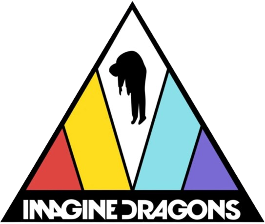

Imagine Dragons es una banda de rock estadounidense formada en 2008 en Las Vegas, Nevada. El grupo se caracteriza por su estilo ecléctico que mezcla rock, pop, electrónica y elementos de música indie. La banda fue fundada por el cantante Dan Reynolds, el guitarrista Wayne Sermon, el bajista Ben McKee y el baterista Daniel Platzman, aunque la formación ha experimentado algunos cambios a lo largo de los años.
El nombre "Imagine Dragons" es un anagrama cuyo significado nunca ha sido revelado por la banda, lo que añade un toque de misterio. Su gran éxito llegó con el lanzamiento de su primer álbum Night Visions (2012), que incluye el tema "It's Time" y el megaéxito "Radioactive", que se convirtió en una de las canciones más exitosas y populares de la década, logrando múltiples premios y nominaciones.
A lo largo de su carrera, Imagine Dragons ha lanzado varios álbumes de estudio, entre los cuales destacan Smoke + Mirrors (2015), Evolve (2017) y Origins (2018). El grupo es conocido por su energía en vivo, y ha sido nominado y ha ganado múltiples premios, incluidos Grammy y American Music Awards.
La banda ha sido un fenómeno global, logrando ventas millonarias y una base de fans extensa en todo el mundo. Han sido elogiados tanto por su capacidad para fusionar géneros musicales como por su habilidad para crear himnos de gran impacto, a menudo con letras que abordan temas de lucha personal, superación y emociones intensas.
